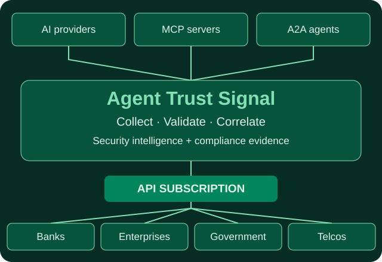

01 /
Dependency intelligence
Visibility into AI software dependencies and security advisories.
Explore Dependency intelligence ↗Agent Trust Signal (ATS) focuses on independent security intelligence for AI dependencies, MCP servers and the software supply chain.

As AI crosses organisational boundaries, independent security evidence becomes essential. ATS brings together the public ecosystem of registries, dependency metadata and vulnerability intelligence.
Visibility into AI software dependencies and security advisories.
Explore Dependency intelligence ↗Independent evidence for enterprise AI risk assessment.
Explore Enterprise trust ↗Research into evidence quality, provenance and long-term trust.
Explore Security research ↗A subscription API strategy built around machine-readable security intelligence and open ecosystem standards.
Developer resources ↗Public intelligence ecosystem MCP Registry · Package metadata CVE · OSV · NVD CISA KEV · FIRST EPSS Independent intelligence. Subscription API.
Independent engineering, open innovation and a belief that digital trust should cross borders.
Discover our story ↗Collect, validate and correlate security intelligence and compliance evidence for banks, enterprises, government and telecommunications providers.
